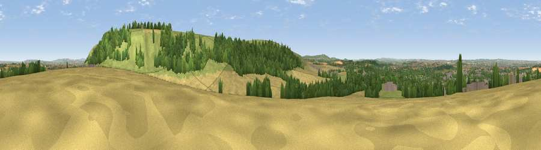

Viewpoint near Westbury
#12349 in England · top 18% of its area beats it · near WestburyThe view, rendered

A 360° render of this exact spot computed from the terrain model, tree cover and land cover — summer colours, afternoon light, calibrated against photographs of famous viewpoints. Real trees, hedges and buildings will differ in detail.
The panorama
Grey silhouette: terrain skyline in each direction (720 bearings, Earth curvature and refraction included). Dashed green: skyline with trees (+15 m) and buildings (+8 m) as obstacles. Blue strip: how far the ground is visible on each bearing.
Where the view opens
Wedge length = distance to the farthest visible ground on that bearing (vegetation-aware). Rings at 10, 25 and 50 km.
What fills the view
38% grassland · 31% woodland · 24% cropland · 7% built-up
Angular shares of the visible panorama (visual magnitude), not map area. Landscape diversity 0.55 (0–1 Shannon).
Key numbers
More beautiful places nearby
The staircase of upgrades: each row has a higher view potential than everything closer. Driving times are estimates from straight-line distance, calibrated against real road routing — check an actual route before setting out.
| Place | Direction | Drive | Score |
|---|---|---|---|
| Viewpoint near Westbury | ENE · 1 km | ~3 min | 71.3 |
| Viewpoint near Bratton | ENE · 2 km | ~6 min | 73.2 |
| Cley Hill | SW · 7 km | ~15 min | 76.8 |
| Viewpoint near Lamyatt | SW · 26 km | ~41 min | 77.8 |
| Viewpoint near Berwick St John | S · 30 km | ~47 min | 78.2 |
| Beacon Batch | W · 40 km | ~59 min | 79.4 |
| Viewpoint near Stinchcombe | NNW · 49 km | ~70 min | 80.5 |
| Viewpoint near Askerswell | SSW · 65 km | ~88 min | 81.7 |
51.25466, -2.17513 · source: screening · position refined by local search. Computed location — check access rights before visiting.